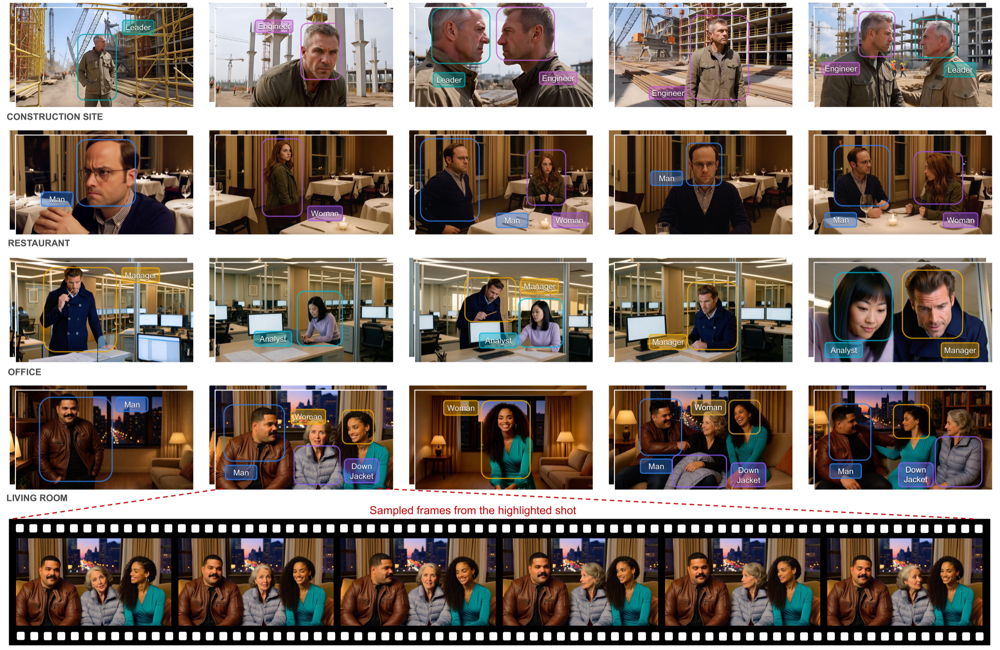
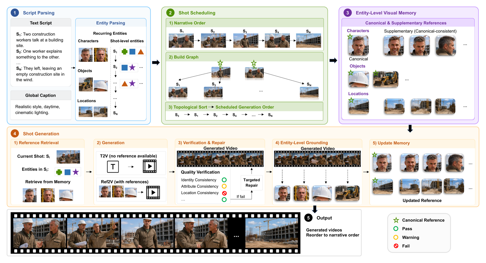

Quality-aware shot scheduling
GroundShot decouples generation order from narrative order, prioritizing shots expected to provide clear canonical references for recurring entities.

Generating visually consistent multi-shot videos remains an open challenge. As videos span more shots, inconsistencies can accumulate across shots, causing entities that reappear across shots—characters, objects, and locations—to drift away from how they first appear. We observe that viewers judge consistency by comparing each later appearance of an entity with its first clear appearance; the visual quality of this initial appearance sets the consistency ceiling for all that follows. Motivated by this, we present GroundShot, a training-free, model-agnostic agentic framework for entity-grounded multi-shot generation. GroundShot builds an entity-level visual memory online from accepted generated shots: it schedules shots' generation order by their expected usefulness as entity references, grounds entities from generated videos, verifies their reliability before adding them to memory, and retrieves suitable entity references from memory before each shot is generated. To evaluate this entity-centered view of consistency, we further introduce GroundBench, a diagnostic benchmark that measures consistency at the entity level while isolating controlled challenge dimensions. Experiments show that GroundShot improves multi-shot consistency over existing methods while requiring no additional training or model modification.
Key contributions
GroundShot decouples generation order from narrative order, prioritizing shots expected to provide clear canonical references for recurring entities.
It grounds characters, objects, and locations from accepted shots, filters unreliable references, and retrieves canonical-consistent references for each new shot.
A diagnostic entity-level benchmark enables controlled failure analysis, where GroundShot outperforms strong baselines without training or model modification.
How it works
Given a text script and an optional global caption, GroundShot builds an entity-level visual memory and generates shots in a quality-aware order that prioritizes strong references. The generated clips are then restored to their original narrative order.

Qualitative results
Multi-shot comparisons and additional examples with scripts synchronized to the displayed shots.
01
02
Evaluation
Results on GroundBench across entity-level consistency, shot-level consistency, and video quality. Up arrows indicate that higher values are better.
| Method | Entity-Level | Shot-Level | Quality | ||||||
|---|---|---|---|---|---|---|---|---|---|
| ARC ↑ | XCD ↑ | WCI ↑ | EAF ↑ | ESC | FaceSim ↑ | CSC ↑ | Aesth. ↑ | Dyn. | |
| HoloCine | 0.368 | 0.119 | 0.212 | 0.617 | 0.549 | 0.417 | 0.621 | 0.542 | 0.539 |
| MultiShotMaster-1.3B | 0.220 | 0.057 | 0.163 | 0.613 | 0.480 | 0.271 | 0.509 | 0.521 | 0.625 |
| MultiShotMaster-14B | 0.282 | 0.078 | 0.204 | 0.611 | 0.397 | 0.367 | 0.572 | 0.540 | 0.375 |
| StoryMem | 0.314 | 0.125 | 0.240 | 0.616 | 0.700 | 0.368 | 0.656 | 0.536 | 0.750 |
| Vidu-Naive | 0.346 | 0.114 | 0.221 | 0.615 | 0.565 | 0.404 | 0.635 | 0.545 | 0.615 |
| GroundShot (Vidu) | 0.426 | 0.157 | 0.264 | 0.634 | 0.670 | 0.449 | 0.671 | 0.552 | 0.640 |
| Kling-Naive | 0.355 | 0.116 | 0.227 | 0.612 | 0.583 | 0.408 | 0.642 | 0.550 | 0.620 |
| GroundShot (Kling) | 0.414 | 0.151 | 0.255 | 0.629 | 0.688 | 0.441 | 0.663 | 0.558 | 0.715 |
| Phantom-Naive | 0.301 | 0.081 | 0.198 | 0.598 | 0.526 | 0.356 | 0.586 | 0.528 | 0.580 |
| GroundShot (Phantom) | 0.376 | 0.127 | 0.235 | 0.614 | 0.634 | 0.402 | 0.642 | 0.534 | 0.610 |
Citation
@misc{lai2026groundshot,
title = {GroundShot: Visually Consistent Multi-Shot Long Video Generation via Entity-Grounded Shot Scheduling},
author = {Lai, Yixuan and Shao, Tianjia and Dou, Weijia and Zhu, Siyu and Wang, Jingdong},
year = {2026},
eprint = {2606.20799},
archivePrefix = {arXiv},
primaryClass = {cs.CV},
doi = {10.48550/arXiv.2606.20799}
}